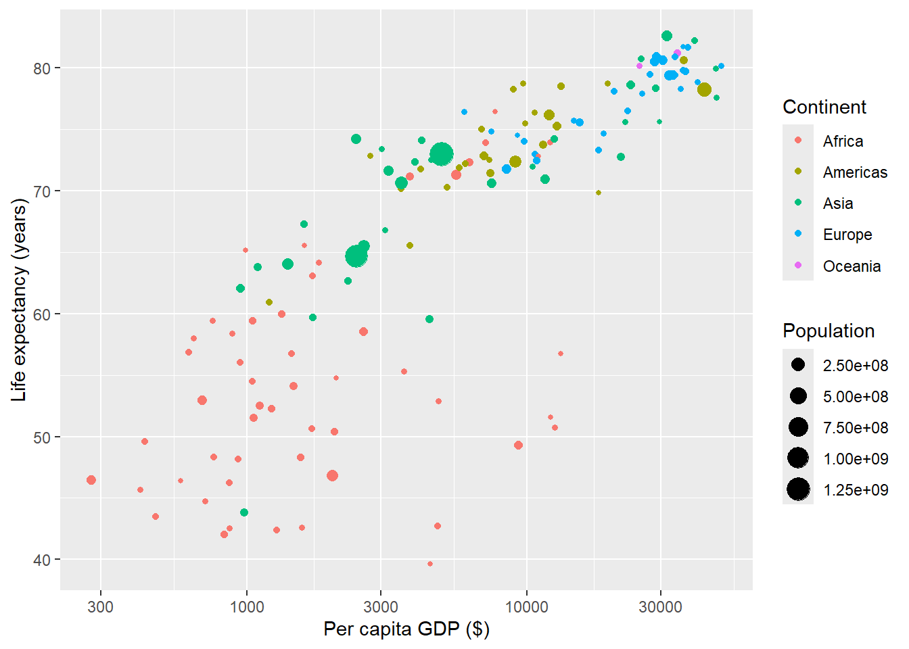
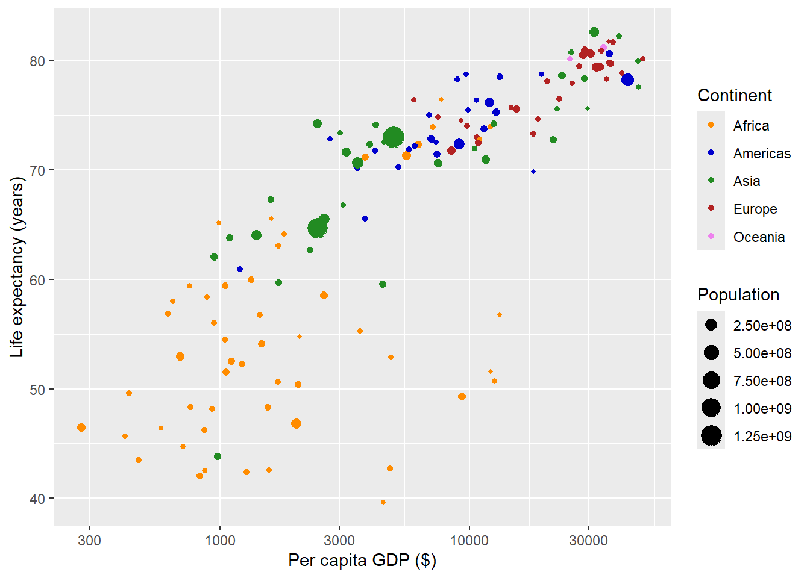

At certain points along the way, we’ve used some functions in ggplot to modify elements of the graph that look something like this:
scale_<something>_<anotherThing>
For example, we’ve seen how we can use logarithms to modify the display of data along an axis:
library(gapminder)#subset gapminder to 2007gap07<-filter(gapminder,year==2007)#plot gdp, life expectancy, population, continent with log10 scale for gdpggplot(gap07,aes(x=gdpPercap,y=lifeExp,size=pop,color=continent)) +geom_point() +labs(x="Per capita GDP ($)",y="Life expectancy (years)",color="Continent",size="Population") +scale_x_log10()

We’ve also seen how we can use this same kind of function to access color:
#plot gdp, life expectance, population, continentggplot(gap07,aes(x=gdpPercap,y=lifeExp,size=pop,color=continent)) +geom_point() +labs(x="Per capita GDP ($)",y="Life expectancy (years)",color="Continent",size="Population") +scale_x_log10() +scale_color_manual(values=c("darkorange","blue3","forestgreen","firebrick","violet"))

There are a number of these “scale” functions, and while they are used to make a wide range of changes to the appearance of a graphic, they all more or less perform the same kind of task: they are modifying the scale over which a given variable is translated to the plotting space. Therefore, they all begin with
scale_
The scales we might modify in a graph aren’t inherent , but are created when we start the aesthetic mapping process; for example, plotting numerical values along the x and y axis, or modifying symbol shapes or colors based on grouping categories. For each of these aesthetics, there exists a corresponding scale, and so the functions accessing these will have names including that aesthetic, such as:
scale_x
scale_y
scale_fill
scale_shape
scale_size
Finally, the kind of data being mapped onto that aesthetic will have corresponding scales that can be applied given the kind of data being displayed (e.g., continuous, discrete, etc.). For example, imagine a we’re just working with oone
ggplot(gap07,aes(x=gdpPercap)) +geom_histogram()
When we create this graph, we are mapping to x and y position, so we are by default including continuous scales on the x and y axis (y being the counts for each histogram bin). We can add these in more explicitly with the following functions:
Added as is, this does nothing to the plot. These functions, without any arguments, rely on the default settings, which are based on the shape and characteristics of the data itself. But now that they are in the code, we can make some modifications to them. An obvious way to change the mapping for position would be to set different limits to the graph. We’ll do that here on the y-axis with the limits argument:
This takes a vector of two numbers, which are the minimum and maximum value plotted. Here, we increased the default maximum, defined by the maximum value from the data, to a custom value of 50. While the default will likely be an appropriate value to use, there may be times when changing an axis is limit is useful.
Likewise, we may want to change the values represented on the axis itself. Here, we can set custom values using the breaks argument:
Hopefully it’s clear what happened here. Now the graph only shows values on the y-axis at 0, 25, and 50. We could change these to anything we want as long as they fit within the limits we set. This might be useful in a number of cases, but in particular when graphs need to be printed small and showing all the default values on an axis isn’t practical.
Finally, we can change what the axis labels actually say. We do this with the labels function, with a label for each break mentioned in the breaks function:
Obviously now we’re getting a little ridiculous; these labels are not only inconsistent with plotting convention, but they’re impractical because they eat up a lot of space in the plot. However, while using this custom labeling may not make sense here, you might be able to imagine a situation, say working with a categorical variable, where the ability to rework the labels on the axis may be very useful.
TipTry it yourself!
Look at the help for scale_y_continuous using ? at the command line. Here you can see all of the arguments this function takes. Look over the arguments and try and make changes to the minor_breaks and position arguments according to the kind of object it takes.